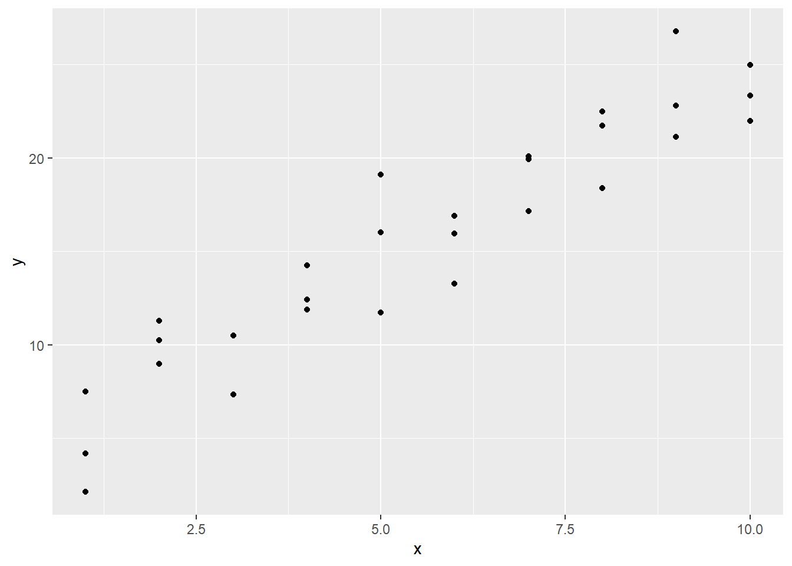
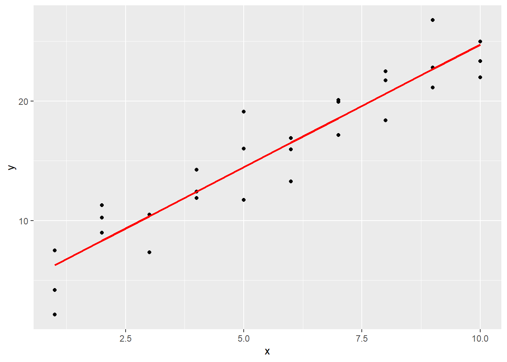
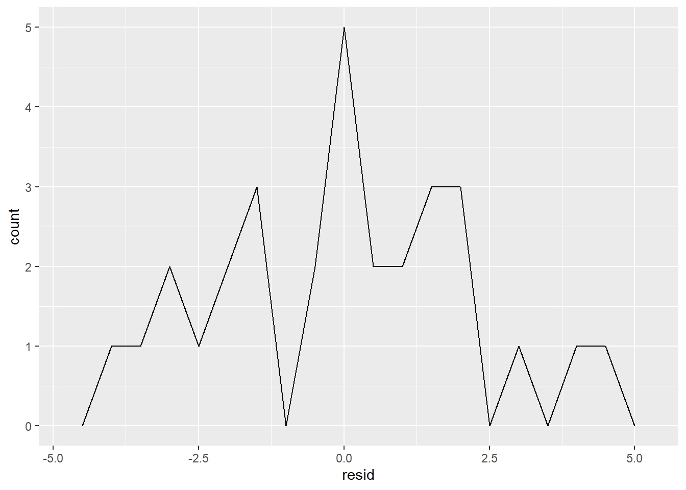
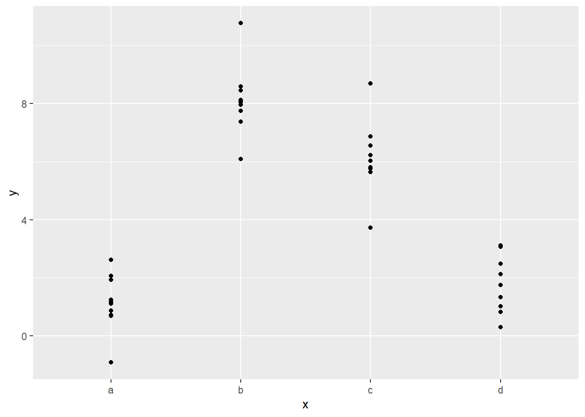
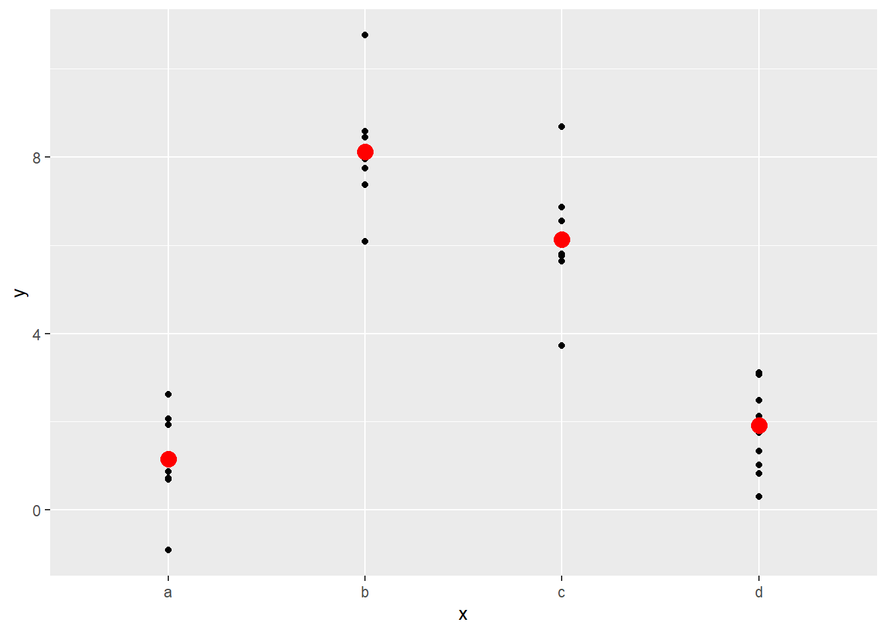
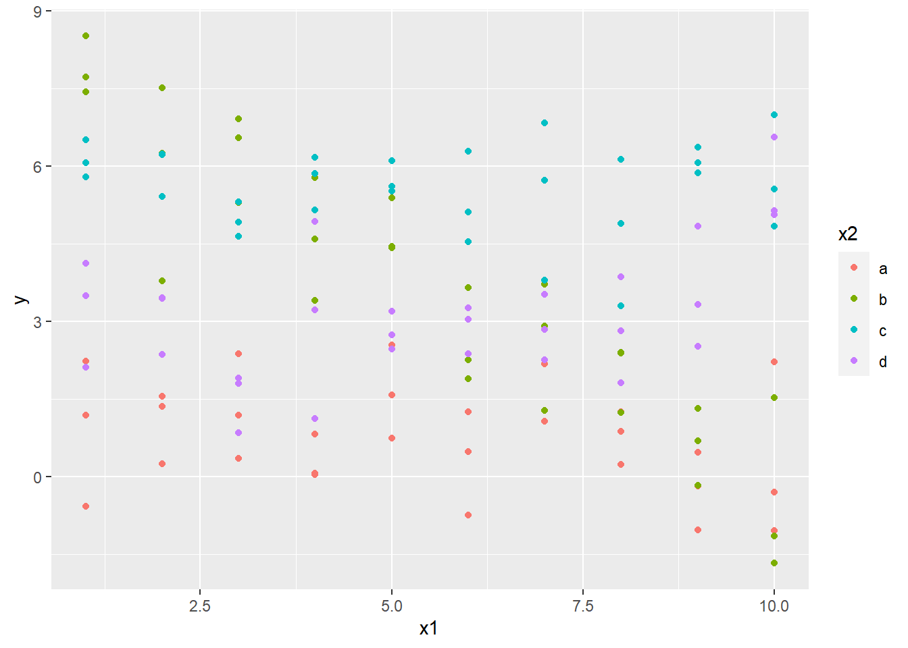
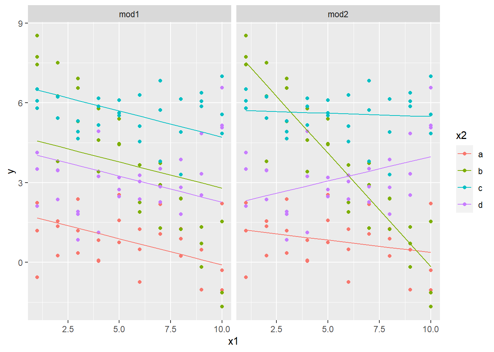
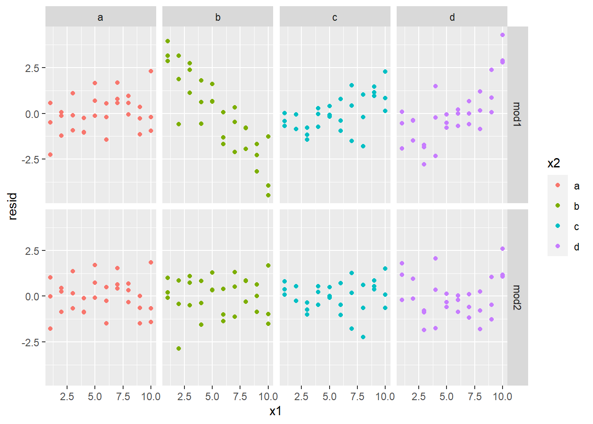
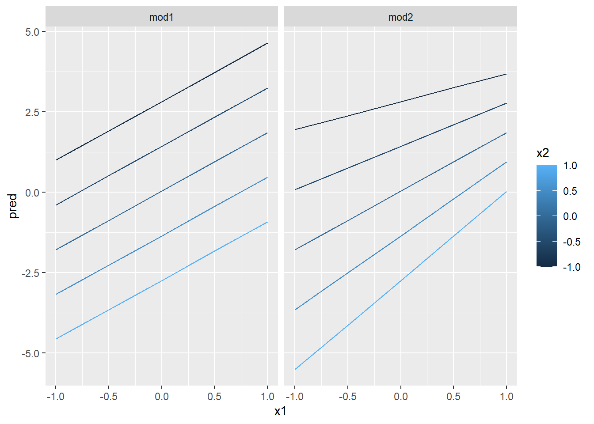
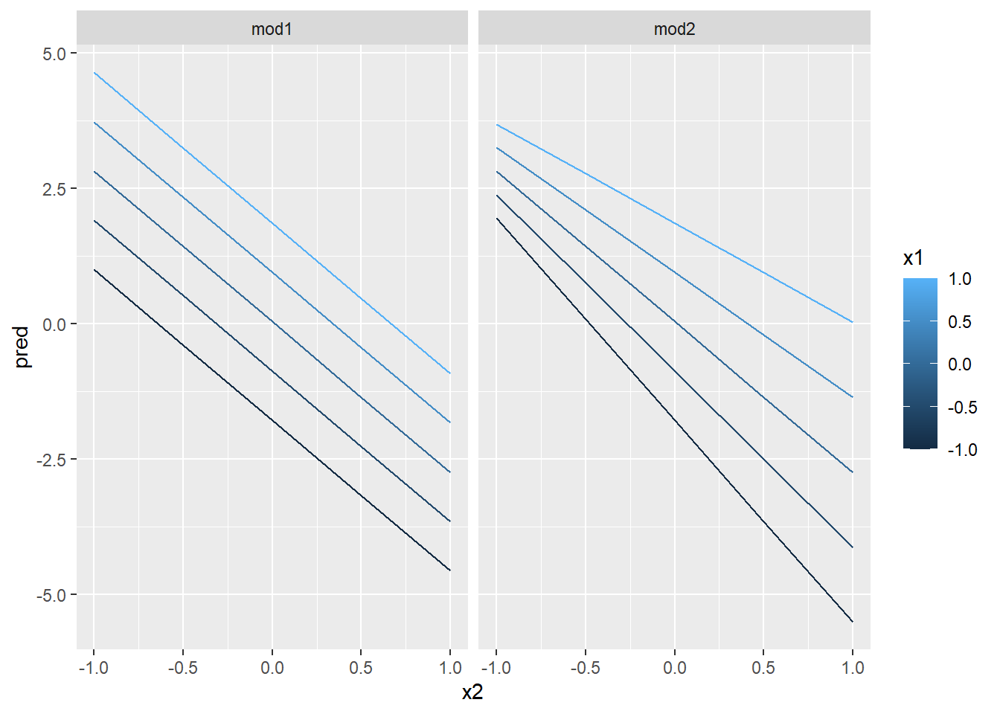

24 Modellering: basics
Wickhams bok innehåller en del statistisk teori om modellering vilket vi här kommer att lämna därhän. För den som är intresserad av att ta del av detta hänvisas till http://r4ds.had.co.nz/model-intro.html
Vi kommer istället att lägga fokus på hur man skapar statistiska modeller i R/Rstudio hands-on alltså. Vi ska börja med att känna på R:s grundläggande begrepp för att bygga upp modeller med hjälp av simulerade data för att senare arbeta mer praktiskt med verkliga dataset.
Det finns två delar i en modell i R:
- Först behöver du definiera vilken modell-familj (family of models) som ska användas. Det handlar om vilken typ av funktion som bäst beskriver dina data, det kan vara en rät linje eller en kvadratisk eller en polynomisk.
- Du använder denna funktion till att hitta den modell som bäst beskriver dina data.
Vi laddar in modulerna som vi ska använda:
Modulen modelr innehåller en rad funktioner för att få R:s bas-funktioner för modellering att fungera i pipes.
24.1 En enkel modell
Låt oss titta på ett simulerat dataset, sim1, som finns i modelr. Det innehåller två kontinuerliga variabler, x och y, vilka vi plottar för att se hur de är relaterade:

Här finns ett tydligt mönster. Vi ska hitta en modell som fångar detta mönster explicit. Relationen mellan x och y förefaller vara linjär vilket kan skrivas y = a_0 + b_1 * x.
R har ett specifikt verktyg för linjära modeller lm(), linear model. Som argument i detta verktyg används formler för att specificera modellen. Formler i R har formen y ~ x. Pröva:
##
## Call:
## lm(formula = y ~ x, data = sim1)
##
## Residuals:
## Min 1Q Median 3Q Max
## -4.1469 -1.5197 0.1331 1.4670 4.6516
##
## Coefficients:
## Estimate Std. Error t value Pr(>|t|)
## (Intercept) 4.2208 0.8688 4.858 4.09e-05 ***
## x 2.0515 0.1400 14.651 1.17e-14 ***
## ---
## Signif. codes: 0 '***' 0.001 '**' 0.01 '*' 0.05 '.' 0.1 ' ' 1
##
## Residual standard error: 2.203 on 28 degrees of freedom
## Multiple R-squared: 0.8846, Adjusted R-squared: 0.8805
## F-statistic: 214.7 on 1 and 28 DF, p-value: 1.173e-1424.2 Visualisera modeller
24.2.1 Prediktioner
Vi ska kika lite på prediktioner som ett sätt att förstå en modell. Vi börjar med att generera en “grid” av värden som täcker in det intervall som täcker våra data. Det enklaste sättet att göra det på är att använda modelr::data_grid(). Dess första argument är en dataram, och för varje ytterligare argument finner funktionen de unika variablerna och genererar alla kombinationer:
## # A tibble: 10 x 1
## x
## <int>
## 1 1
## 2 2
## 3 3
## 4 4
## 5 5
## 6 6
## 7 7
## 8 8
## 9 9
## 10 10Därefter adderar vi prediktionerna med hjälp av modelr::add_predictions(). Den tar en dataram och en modell och lägger till prediktionerna givet data och modellen:
## # A tibble: 10 x 2
## x pred
## <int> <dbl>
## 1 1 6.27
## 2 2 8.32
## 3 3 10.4
## 4 4 12.4
## 5 5 14.5
## 6 6 16.5
## 7 7 18.6
## 8 8 20.6
## 9 9 22.7
## 10 10 24.7Sedan plottar vi prediktionerna. Vi gör det tillsammans med de observerade värdena.
ggplot(sim1, aes(x)) +
geom_point(aes(y = y)) +
geom_line(aes(y = pred), data = grid, colour = "red", size = 1)
Man kan även använda funktionen geom_abline() för att visualisera en linjär regressionslinje men fördelen med att använda add_predictions() är att denna funktion fungerar för vilken modell som helst, oavsett komplexitet. För fler sätt att visualisera komplexa modeller se gärna http://vita.had.co.nz/papers/model-vis.html.
24.2.2 Residualer
Residualer är komplementet till prediktioner och är differensen mellan de observerade värdena och predicerade värdena.
Vi lägger till residualerna med hjälp av add_residuals(), som fungerar ungefär som add_predictions(). Men här behövs förstås det ursprungliga data där y-värdena finns:
## # A tibble: 30 x 3
## x y resid
## <int> <dbl> <dbl>
## 1 1 4.20 -2.07
## 2 1 7.51 1.24
## 3 1 2.13 -4.15
## 4 2 8.99 0.665
## 5 2 10.2 1.92
## 6 2 11.3 2.97
## 7 3 7.36 -3.02
## 8 3 10.5 0.130
## 9 3 10.5 0.136
## 10 4 12.4 0.00763
## # ... with 20 more rowsDet finns några olika sätt att förstå vad residualerna ger för information om modellen vi valt. Ett sätt är att göra en frekvenspolygon för att se spridningen av residualerna:

Här framgår hur långt från regressionslinjen (prediktionerna) finns de observerade värdena.
För att kunna se residualerna hellre än prediktionerna:

Residualerna förefaller fördelas slumpmässigt vilket talar för att modellen fångar essensen i data ganska väl.
24.3 Formler och modell-familjer
Formler i R är av en speciell karaktär. Formler i R är ett generellt sätt att fånga “ett speciellt beteende”. Snarare än att utvärdera variabelvärden fångar R-formeln in data så att de kan tolkas av den funktion man vill använda.
De flesta modellfunktioner i R använder ett standardiserat sätt att omvandla formler till funktioner. Omvandlingen vi använde innan, y ~ x omvandlas av funktionen lm() till y = a + b_1*x. Det framgår tydligare om vi tar fram modell-matrisen med hjälp av funktionen model_matrix(). Den tar en dataram och en formel och genererar en tibble som definierar modellens ekvation: varje kolumn i tibblen är associerad till en koefficient i modellen. Vi kollar i den enklaste modellen, y~x1:
## # A tibble: 2 x 2
## `(Intercept)` x1
## <dbl> <dbl>
## 1 1 2
## 2 1 1Lägger man till fler variabler till modellen utvidgas matrisen:
## # A tibble: 2 x 3
## `(Intercept)` x1 x2
## <dbl> <dbl> <dbl>
## 1 1 2 5
## 2 1 1 6Sättet som R lägger till interceptet till modellen är via en kolumn fylld med värdet 1. För den som är intresserad av algebra kan rekommenderas Wilkinson & Rogers Symbolic Description of Factorial Models for Analysis of Variance, https://www.jstor.org/stable/2346786 som beskriver och motiverar detta sätt att definiera ekvationen och modellmatrisen.
Låt oss kika på hur detta fungerar för kategoriska variabler, interaktioner och transformeringar.
24.3.1 Kategoriska variabler
Låt oss säga att vi har en formel y ~ sex, där sex kan vara antingen man eller kvinna. I detta fall är ju sex en kategorisk variabel vilken i R konverteras till dummyvariabler, i detta fall i modellen y~a + b_1 * sex_man där sex_man är 1 om sex är en man och 0 om sex är en kvinna:
df <- tribble(
~ sex, ~ response,
"male", 1,
"female", 2,
"male", 1
)
model_matrix(df, response ~ sex)## # A tibble: 3 x 2
## `(Intercept)` sexmale
## <dbl> <dbl>
## 1 1 1
## 2 1 0
## 3 1 1Vi kan utveckla detta resonemang med hjälp av sim2:

Vi kan anpassa en modell till dessa data och generera prediktioner:
## # A tibble: 4 x 2
## x pred
## <chr> <dbl>
## 1 a 1.15
## 2 b 8.12
## 3 c 6.13
## 4 d 1.91Prediktionerna från en modell med kategoriska data kommer att vara lika med kategoriernas medelvärden eftersom dessa minimerar prediktionernas summerade avvikelse från modellens regressionlinje the root mean squared distance. Det blir uppenbart genom att lägga till medelvärden för kategorierna i grafen:
ggplot(sim2, aes(x)) +
geom_point(aes(y = y)) +
geom_point(data = grid, aes(y = pred), colour = "red", size = 4)
24.3.2 Interaktioner
Vad händer när du kombinerar en kontinerlig och en kategorisk variabel? I sim3 finns en kategorisk variabel och en kontinuerlig:

Dessa data kan beskrivas på två sätt:
När man adderar två variabler med + kommer modellen att utvärdera effekten för varje variabel oberoende av de övriga. När man lägger till variabler med * utvärderas interaktionen mellan de två variablerna. Till exempel tolkas formeln y~x1 * x2 som y = a + b1*x1 + b2*x2 + b3*x1*x2. Använder man * istället för + inkluderas alltså både de enskilda variablerna och interaktionsvariabeln.
För att visualisera dessa modeller behöver vi justera koden från det tidigare exemplet:
- Vi har två variabler så vi behöver ge
data_grid()båda. Då kommer funktionen att ange samtliga unika värden påx1ochx2och generera alla kombinationer av dessa. - För att generera prediktioner från båda modellerna samtidigt kan vi använda
gather_predictions()som lägger till varje prediktion som en rad. Komplementet tillgather_predictions()ärspread_predictions()som lägger till varje prediktion till en ny kolumn.
Sammantaget ger oss detta:
## # A tibble: 80 x 4
## model x1 x2 pred
## <chr> <int> <fct> <dbl>
## 1 mod1 1 a 1.67
## 2 mod1 1 b 4.56
## 3 mod1 1 c 6.48
## 4 mod1 1 d 4.03
## 5 mod1 2 a 1.48
## 6 mod1 2 b 4.37
## 7 mod1 2 c 6.28
## 8 mod1 2 d 3.84
## 9 mod1 3 a 1.28
## 10 mod1 3 b 4.17
## # ... with 70 more rowsVi kan visualisera resultaten för båda modellerna genom att använda facets:
ggplot(sim3, aes(x1, y, colour = x2)) +
geom_point() +
geom_line(data = grid, aes(y = pred)) +
facet_wrap(~ model)
Notera att modellen som använder + har samma lutning för varje regressionslinje men skilda intercept, medan modellen med interaktionsvariabeln (*) har regressionslinjer med olika lutning.
Vilken modell passar data bäst? Vi kan kika på residualerna. Vi använder facets för modell och x2 för att kunna se mönster inom varje grupp:
sim3 <- sim3 %>%
gather_residuals(mod1, mod2)
ggplot(sim3, aes(x1, resid, colour = x2)) +
geom_point() +
facet_grid(model ~ x2)
Det finns inte något uppenbart mönster beträffande residualerna för de olika kategorierna a-d i modell 2. Residualerna i modell 1 uppvisar knappast något slumpmässigt mönster; i b är detta uppenbart men även för de övriga kategorierna, vilket kan tolkas som att modell 1 återspeglar data sämre än modell 2.
24.3.3 Interaktioner (två kontinuerliga variabler)
Vi kikar på motsvarande modell för två kontinuerliga variabler. Vi kan i princip upprepa koden från ovanstående exempel till att börja med:
mod1 <- lm(y ~ x1 + x2, data = sim4)
mod2 <- lm(y ~ x1 * x2, data = sim4)
grid <- sim4 %>%
data_grid(
x1 = seq_range(x1, 5),
x2 = seq_range(x2, 5)
) %>%
gather_predictions(mod1, mod2)
grid## # A tibble: 50 x 4
## model x1 x2 pred
## <chr> <dbl> <dbl> <dbl>
## 1 mod1 -1 -1 0.996
## 2 mod1 -1 -0.5 -0.395
## 3 mod1 -1 0 -1.79
## 4 mod1 -1 0.5 -3.18
## 5 mod1 -1 1 -4.57
## 6 mod1 -0.5 -1 1.91
## 7 mod1 -0.5 -0.5 0.516
## 8 mod1 -0.5 0 -0.875
## 9 mod1 -0.5 0.5 -2.27
## 10 mod1 -0.5 1 -3.66
## # ... with 40 more rowsNotera funktionen seq_range() som ett argument i data_grid(). Istället för att använda varje unikt värde i x använder vi en regelbunden grid bestående av fem värden inom intervallet minsta och högsta värde på x. Det finns två andra användbara argument till seq_range():
pretty = TRUEgenererar en “pretty” sekvens, dvs som ser snyggt ut för ögat. Detta kan vara bra om man vill skapa tabeller från output.
## [1] 0.0123000 0.2400808 0.4678615 0.6956423 0.9234230## [1] 0.0 0.2 0.4 0.6 0.8 1.0trim = 0.1klipper 10% av svansvärdena vilket kan vara användbart om du är mer intresserad av värden nära centralvärden i en skev fördelning.
## [1] -389.2927 2303.7231 4996.7389 7689.7547 10382.7706## [1] -5.471760 -3.235923 -1.000087 1.235750 3.471587## [1] -2.23426853 -1.10077363 0.03272128 1.16621618 2.29971109## [1] -1.141117967 -0.569778792 0.001560383 0.572899558 1.144238733expand = 0.1är på sätt o vis motsatsen till trim - det expanderar omfånget (the range) med 10%
Låt oss visualisera den här modellen. Vi kan plotta prediktionerna för en av variablerna givet ett visst värde för den andra:


Detta visar att interaktioner med kontinuerliga variabler fungerar i princip på samma sätt som för kategoriska - för att predicera y behöver man beakta värdena för båda variablerna simultant.
24.3.4 Transformationer
Du kan även utföra transformationer inuti formeln för modellen. Till exempel, log(y) ~ sqrt(x1) + x2 transformeras till log(y) = a + b1*sqrt(x1) + b2*x2.
Om din transformation innehåller +, -, * eller ^ behöver du “paketera” uttrycket i funktionen I() så att R inte behandlar uttrycket som en del av modell-specifikationen. Till exempel:
y ~ x + I(x^2) tolkas som y = a + b1*x + b2*x^2. om du glömmer I() och specificerar modellen till
y ~ x^2 + x kommer R att tolka modellen som y = x * x + x där x*x är i R en interaktion av x med sig själv vilket är lika med x och därmed blir modellen enligt R:s sätt att se y = x + x. Eftersom R automatiskt droppar redundanta variabler kommer uttrcket y ~ x^2 + x att tolkas som y = a + b1*x vilket inte är vad vi ville.
Om du funderar på hur R tolkar ett uttryck kan du använda model_matrix() för att se vilken ekvation som lm() utvärderar:
## # A tibble: 3 x 2
## `(Intercept)` x
## <dbl> <dbl>
## 1 1 1
## 2 1 2
## 3 1 3## # A tibble: 3 x 3
## `(Intercept)` `I(x^2)` x
## <dbl> <dbl> <dbl>
## 1 1 1 1
## 2 1 4 2
## 3 1 9 3Wickham har några fler finesser beträffande transformationer i sin bok, se http://r4ds.had.co.nz/model-basics.html#transformations, men vi lämnar dem därhän för nu.
24.4 Missing values
Eftersom missing values inte innehåller någon användbar information om relationen mellan variabler droppar R automatiskt rader med sådana värden. Man får dock en varning om att detta har skett, t.ex.:
## Warning: Dropping 2 rows with missing valuesFör att undertrycka varningen kan du ange argumentet na.action = na.exclude:
Du kan alltid se hur många observationer som använts i lm() genom nobs():
## [1] 324.4.1 Andra modell-familjer
R hanterar förstås andra än linjära modeller som vi just diskuterat t.ex.:
- Generaliserade linjära modeller (GLM) - t.ex.
stats::glm(). GLM hanterar icke-kontinuerliga utfall såsom binära eller antal (counts). - Generaliserade additiva modeller (GAM) - t.ex.
mgcv::gam()vilka utvecklar GLMs till att inkludera godtyckliga smoothing-funktioner. Det innebär att du kan ange en formely ~s(x)vilket blir tolkat som en ekvation av typy = f(x)och låptergam()estimera vad den funktionen är . - Penalised linear models, robust linear models, trees, random forests och ett antal ytterligare. Men det är överkurs här. Det är emellertid på sin plats att påpekat att modellerna i R fungerar på i princip ett likartat sätt vilket innebär att när du väl bemästrar linjära modller kommer du att känna dig hemma när du ska hantera övriga, mer komplexa modeller.